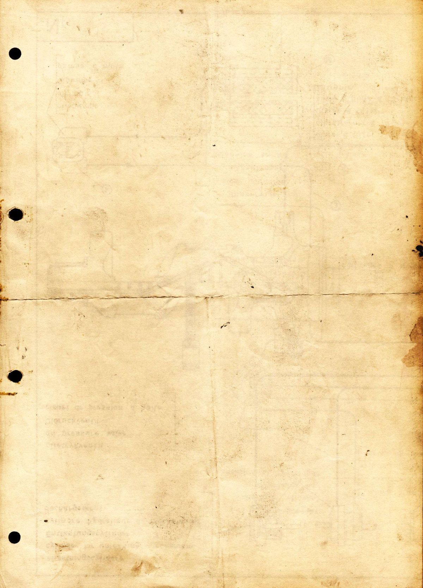

The Katipunan played a crucial role in the Philippine Revolution by serving as the primary organizational engine and ideological force that transformed the national struggle from a movement for peaceful reform into a unified, armed fight for total independence. Founded secretly on July 7, 1892, by Andrés Bonifacio and his associates following the collapse of La Liga Filipina, the secret society mobilized the masses across Luzon by using local languages and spreading revolutionary literature through its newspaper, Kalayaan. Beyond functioning as a military force, the Katipunan operated as a structured shadow government with central, provincial, and local councils, allowing it to seamlessly direct the simultaneous uprisings across central provinces after the Cry of Pugad Lawin in August 1896 and ultimately lay the organizational foundation for the first Philippine Republic.
Dr. José Rizal opposed the 1896 revolution because he believed it was premature, ill-prepared, and lacking the weapons and strategy needed to succeed without devastating casualties. He insisted that true independence required an educated and civic-minded populace first, warning that freedom without enlightenment would only lead to internal chaos. In contrast, Andrés Bonifacio and the Katipunan recognized that centuries of colonial abuse and Spain’s rejection of peaceful reform left no legal path forward. Driven by urgency after their secret society was exposed in August 1896, the revolutionaries mobilized a grassroots armed uprising. Thus, while Rizal provided the intellectual spark and moral framework for national identity, the revolutionaries translated that consciousness into immediate military action to overthrow colonial rule by force.